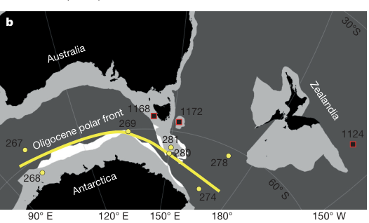
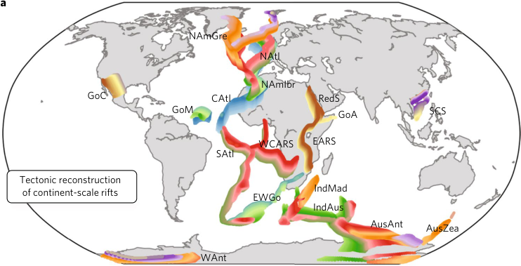
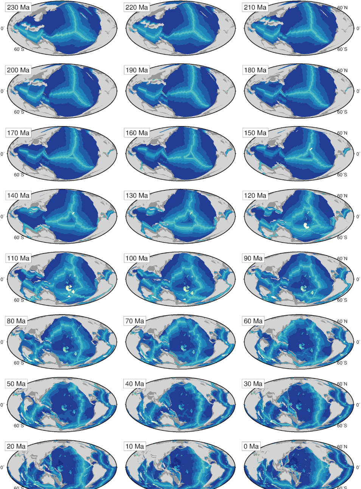
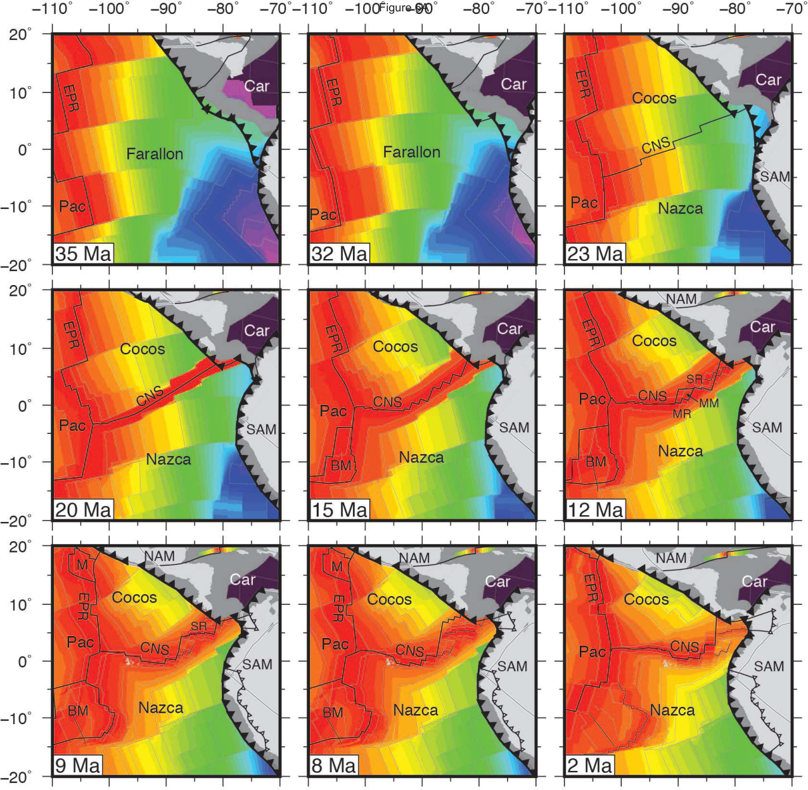
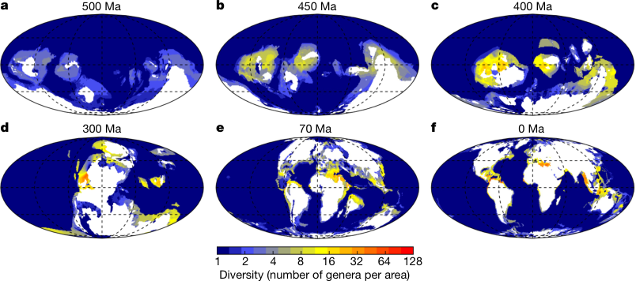
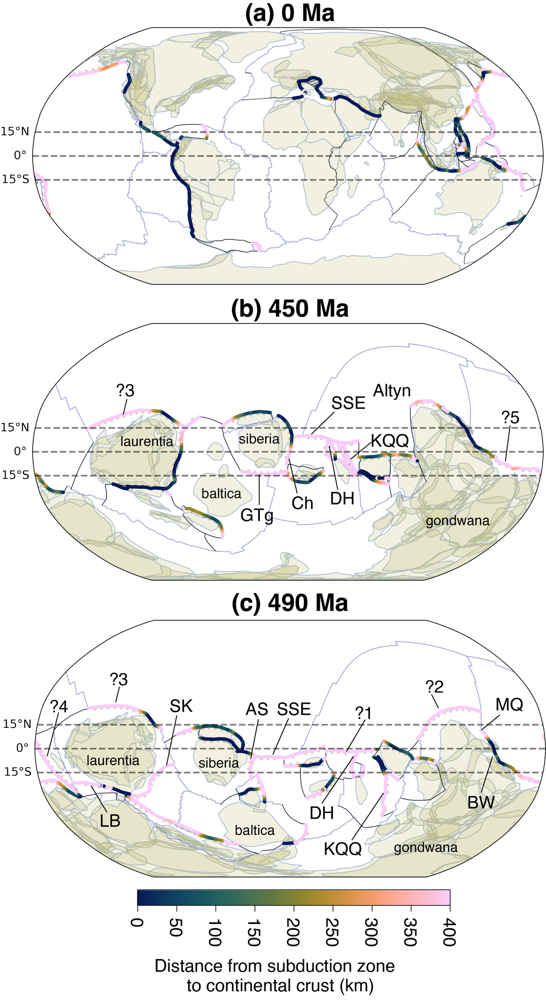

Scher, Whittaker, Williams, Latimer, Kordesch & Delaney (2015, Nature) pinned down one of the great open questions about the Southern Ocean: exactly when did the Antarctic Circumpolar Current (ACC) switch on? Combining a plate reconstruction of the Tasmanian Gateway with neodymium isotopes from fossil fish teeth, they show the gateway opened to depths below 500 m around 33.5 million years ago, but the ACC itself — recorded by a permanent shift to modern Indian-Atlantic-like isotope ratios — didn't switch on until about 30 million years ago, once the widening gateway drifted north into the mid-latitude westerly wind band. The map below reconstructs the gateway and the Oligocene polar front at that moment, 30 million years ago.

Fig. 1b, Scher et al. (2015).
Brune, Williams & Müller (2017, Nature Geoscience) combined a global tectonic reconstruction of continental rifting since 200 Ma with measured CO₂ flux densities from active rift systems, to test whether rifting itself is a significant, and previously overlooked, source of solid-Earth carbon degassing. Two major pulses of rifting — the Mesozoic break-up of Pangaea and a renewed Cenozoic phase beginning in the Eocene — line up with independent evidence for elevated atmospheric CO₂, at rates comparable to those from mid-ocean ridges and subduction zones combined. The map below reconstructs every continent-scale rift system by the age of its activity, the dataset behind that CO₂ flux history.

Fig. 1a, Brune et al. (2017).
Wright, Seton, Williams, Whittaker & Müller (2020, Earth-Science Reviews) asked how much of long-term sea-level change is explained by nothing more than the changing shape and volume of the ocean basins themselves, as continents rift apart and oceanic crust ages and subsides. Using a global plate reconstruction to rebuild paleobathymetry every million years since 230 Ma, they found that ocean basin volume alone can account for much of the ~200 m rise and fall in sea level recorded since the break-up of Pangaea, without needing to invoke ice volume or deep mantle processes. The maps below step that reconstructed seafloor age and depth from supercontinent to present.

Fig. 3, Wright et al. (2020).
McGirr, Seton & Williams (2020, GSA Bulletin) built a detailed kinematic reconstruction of the Panama and northern Andes region to work out when, and how, the Central American Seaway finally closed — separating the Pacific from the Atlantic and Caribbean, and reshaping ocean circulation in the process. Incorporating rotations of the Panama and Chocó block into a revised plate circuit, they trace the seaway's shoaling through a series of slab windows beneath Central America, arriving at a final closure later than some previous estimates for the rise of the Isthmus of Panama. The maps below show the evolving seafloor age and plate boundary geometry of the Cocos-Nazca-Pacific triple junction, from 35 Ma to the present.

Fig. 6, McGirr et al. (2020).
Cermeño, García-Comas, Pohl, Williams, Benton, Chaudhary, Le Gland, Müller, Ridgwell & Vallina (2022, Nature) built a regional diversification model to test whether marine invertebrate diversity has any real ceiling, or whether it simply keeps growing wherever mass extinctions haven't recently reset the clock. Run against plate reconstructions spanning the entire Phanerozoic, the model reproduces the broad trends in global marine diversity remarkably well, and shows that today's diversity hotspots — concentrated in the Indo-West Pacific and the Caribbean — are a legacy of how much recovery time each region has had since its last major extinction, not just present-day conditions. The maps below reconstruct modelled global diversity from the Cambrian to the present day.

Fig. 2a–f, Cermeño et al. (2022).
A preprint by Merdith, Arnould, McGee, Janin, Williams, Loehr, Blades & Mills, Ocean-arcs as a hidden cooling mechanism during the early Palaeozoic, tackles a stubborn problem in the Ordovician: global temperatures dropped by several degrees over tens of millions of years, but no single tectonic driver has ever fully matched the timing. Their candidate leaves almost no trace in the rock record — oceanic island arcs, mafic-to-intermediate volcanic islands that exist only briefly before colliding with a continent and being scraped into an orogenic belt. Reconstructing the length of these ocean arcs through the late Cambrian and Ordovician and feeding it into an Earth system model, they show that ocean-arc weathering alone can drive 5–7°C of cooling, matching both the pace and the strontium and osmium isotope record of the Hirnantian icehouse. The reconstructions below track ocean arcs restored between Laurentia, Siberia, Baltica and Gondwana, coloured by distance from the nearest continent, at 0, 450 and 490 Ma.

Fig. 2, Merdith et al. (in review) — a preprint, posted to EarthArXiv; figure sourced from the manuscript directly rather than a published version.